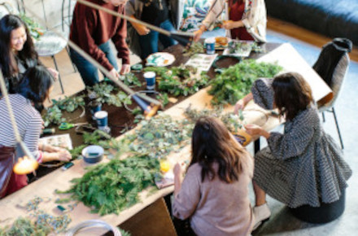

As there are no other, Organisations who provide the services and support to this community what they require. We run more than 22-day centre sessions per year where members have to pay £2 per head for breakfast and afternoon lunch. Different activities like Yoga for elderly. We arrange specialists to come to day centre i.e. person from national pension services, solicitors to help with legal advice, dietician for diet requirement who would inform about calories in Guajarati food, diabetes, arthritis and heart problem which is very common with our people etc. We have evening function with live Indian band who come from India Day Trips Of Various Religious Places Of Worship Are Organised To Assist Our Members To Understand And Respect Other Religions.
As we do not have our property, we hire hall for day centre and evening function due to this we have to limit our membership to about 350. Day centre attendance is on average 100 members and evening function is 250 members. At our evening function, members do not have to pay any extra as we also serve them hot full Gujarati meal. We have fundraised for International Disasters, And for Other Charities like Hart Foundation ECT. We have also provided our volunteers to other communities to help them. Our charity is based on annual membership fee; nominal charge is applied to attend our day centre activities. We raise funds from our members and our community friends to provide and improve quality of life of our members and community. This year we have donated £2000 to help with corona virus with facemasks to hospitals and some cash donation as well.
We have been to lots of countries Tunisia, Turkey, Spain, Cyprus, Greek Islands, Meditation cruise, and Caribbean cruise, North Europe Inc. Russia, China, Alaska, Sri Lanka, Kerala, South Africa, Singapore, Malaysia, Bali and many more. Individual members who wish to travel pay for all these holidays, and group discounts are for the members who travel. Trustees, Executive committee, and committee members are elected and many members help them as volunteers.
Go to the holidays pageThe team is made up of elected members and volunteers form our membership. The election is held at our AGM meeting voted by members who attend.